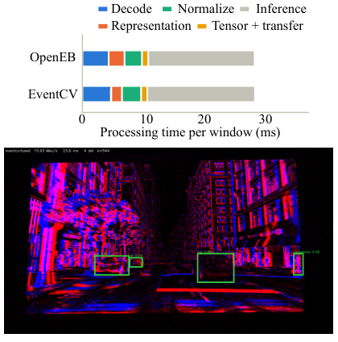
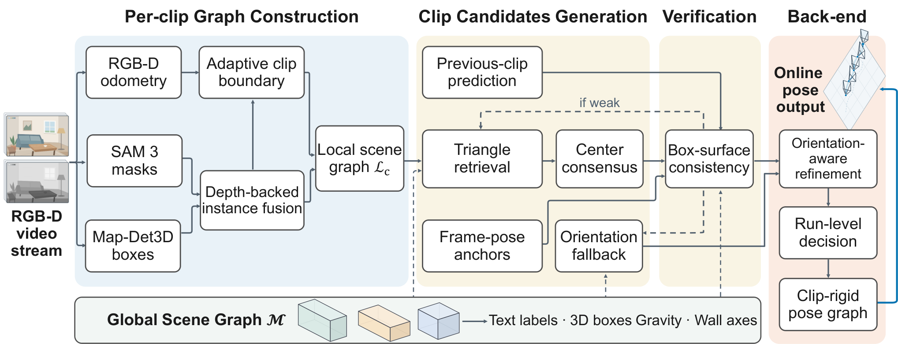

Figure 1: Overview of the benchmark. (Left) During pretraining, models have access to a large pretraining set with 126 mice that includes behavior, spike sorted neural recordings, ...
Figure 6: Index-perturbation maps. Each panel raises one climate index by + 1 σ +1\sigma (the rest held at their mean) and shows the resulting change in the daily model’s mid-Jan...
Fig. 5: Predicted versus actual values on Dataset I before and after FiLM fusion: (a) standalone RUL Expert versus FiLM fusion; (b) standalone Capacity Expert versus FiLM fusion. T...
能否用一个可扩展库覆盖从原始采集、去噪、表示到设备端推理的完整链路？
对当前主题的关键意义在于：原始领域为事件机器人视觉；模块是原生流统一处理与 ONNX 部署；对应前端与实时性。预计降 CPU 延迟，缓存策略可能增内存。失效于跨模态对齐和属性监督缺失。最小实验如上。
方法与关键创新

Fig. 10: The ev-ultralytics YOLO26 [ 41 , 42 ] pipeline on an EVK4 recording, run on a Jetson Orin AGX. Top: per-window processing time by stage, OpenEB against EventCV . Bottom: e...
Figure 1 : Overview of MIST. (1 - Top) Genomic features and WSI are separately embedded, and genomic tokens are cross-attention-enriched into 𝐄 hist \mathbf{E}^{\mathrm{hist}} . (3...
Figure 1: Overall framework of QCPruner. At the post-layer- ℓ \ell hook, matched query anchors are used to compute hidden-state cosine similarity from the layer output and pre-soft...
Figure 1: Evaluation and training share a controlled ECG substitution. The reference answer remains fixed in conditional preference training. The no-image input contains only EHR t...
如何在极小地图预算下利用视频时间上下文稳定恢复轨迹？
对当前主题的关键意义在于：把诊断视频压成 ROI 状态图与变化轨迹，对比全帧、均匀关键帧、自适应片段在异常召回、内存和延迟上的折衷。
方法与关键创新

Fig. 2: Overview of VideoReloc. Per-clip graph construction produces ℒ c \mathcal{L}_{c} from RGB-D odometry and depth-backed instance fusion. Clip candidates generation combines p...
![Figure 1: Overall framework of QCPruner. At the post-layer- ℓ \ell hook, matched query anchors are used to compute hidden-state cosine similarity from the layer output and pre-softmax query–key alignment recorded within the same layer. Their fused utility weights both the target and representative sides of visual affinity, and greedy marginal gain selects K K representatives to maximize coverage of the full candidate population. Structural tokens excluded from the candidate set are preserved. The figure uses S S for the current partial set and 𝒦 \mathcal{K} for its final counterpart in the text.](../assets/figures/ab9334a1f0e25bb8.png)